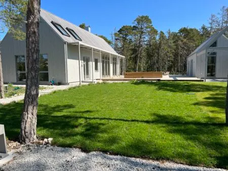
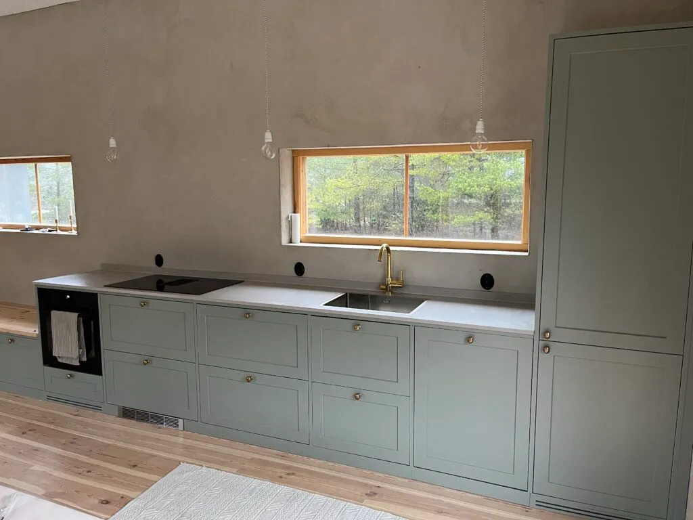
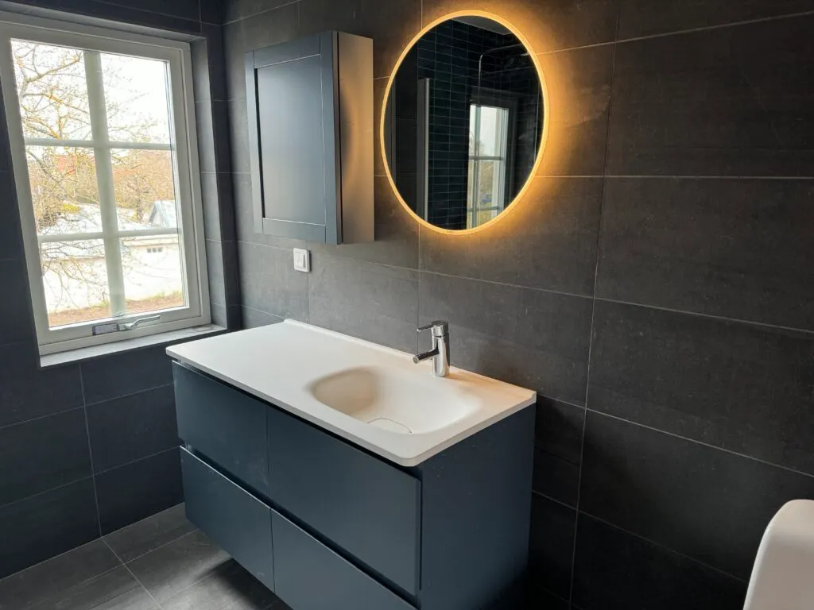
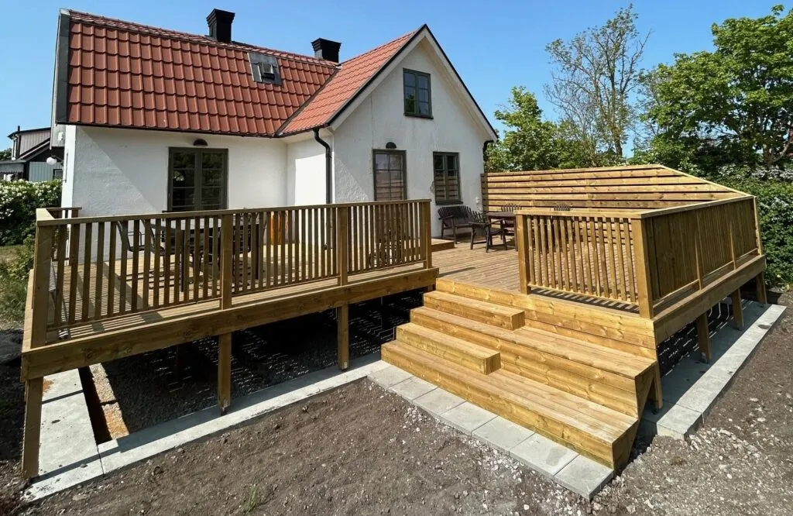
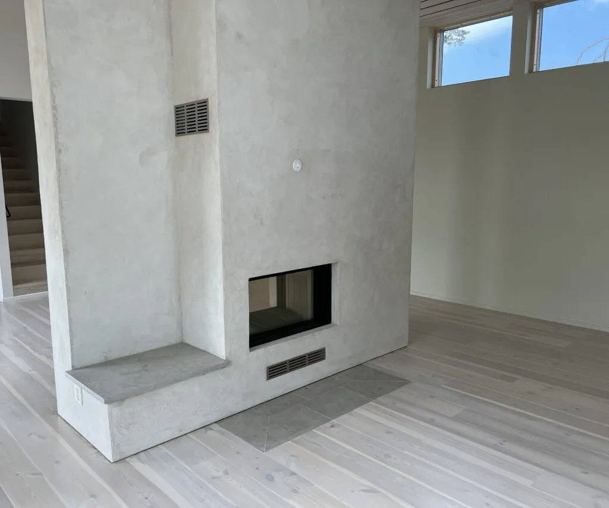
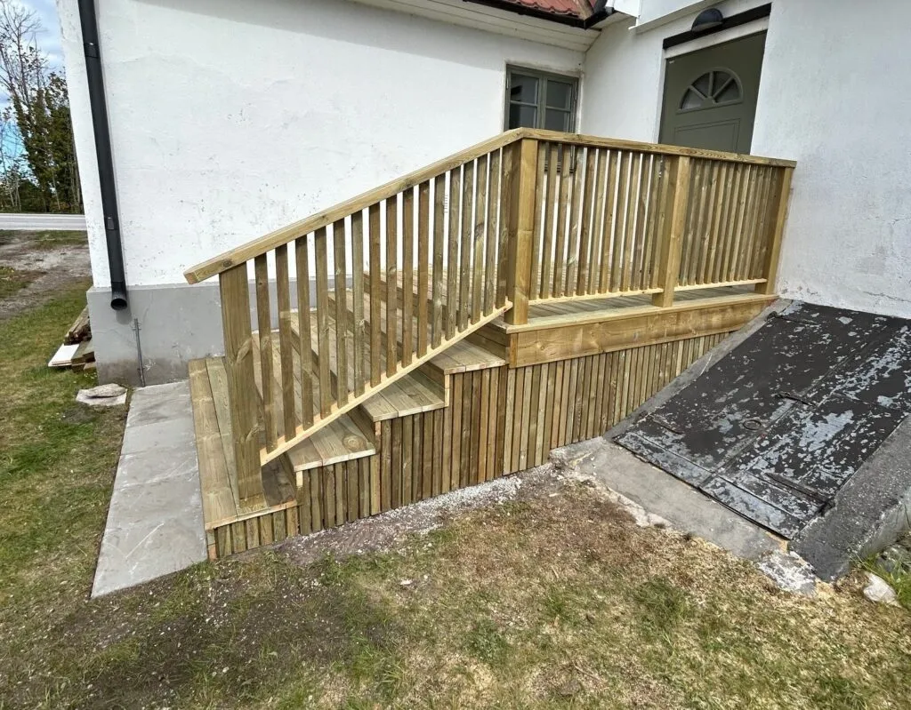
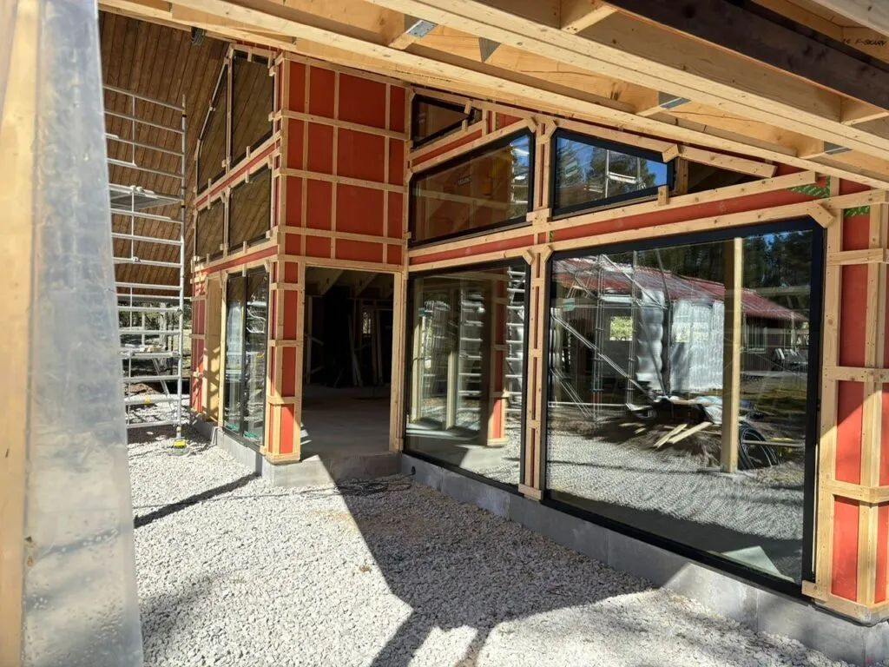

REFERENSER
Hantverket
i verkligheten.
Bilder från Kibbas arbeten inom bygg och snickeri. Välj ett område och se mer.
8 områden
REFERENSBILDER / GOTLAND

Kök & inredning

Badrum

Altaner & uteplatser

Specialsnickeri

Puts & murning

Trappor
